# Skapa ett datamaterial för visualiseringar
residualData <-
tibble(
residuals = residuals(simpleModel),
y = modelData$bill_length_mm,
yHat = fitted(simpleModel)
)4 Modellutvärdering
Efter att vi har anpassat en modell baserat på iakttagelser från visualiseringar och beskrivande statistik har vi möjlighet att tolka det skattade sambandet mellan de förklarande variablerna och responsvariabeln, vilket vi också gjorde i Avsnitt 3.2.1. Det finns dock två aspekter som vi ännu inte funderat på;
- vi kan inte anse att dessa tolkningar beskriver det sanna sambandet då vi ännu inte vet om modellen är lämplig,
- dessa tolkningar beskriver endast urvalet som samlats in, inte den population som vi vill dra slutsatser om.
För att kunna bedöma lämpligheten av modellen måste vi undersöka huruvida modellen uppfyller de antaganden som presenterades i Avsnitt 1.2 genom residualanalys och slutsatser om populationen kan göras med hjälp av statistisk inferens. Vi börjar alltid med att undersöka modellens lämplighet eftersom inferensmetodernas beräkningar också förutsätter att dessa antaganden är uppfyllda.
4.1 Residualanalys
Residualanalys innebär att beräkna och visuellt utforska residualerna från en modell gentemot modellantaganden \(E\overset{iid}{\sim}N(0, \sigma^2)\), det vill säga att residualerna är oberoende, normalfördelade med väntevärde 0 och lika varians. Residualerna kan också användas för att undersöka ifall den linjära modell som anpassats är lämplig. Vi kommer titta närmare på mer detaljerad residualanalys i ett senare kapitel.
För enkelhetens skull kan vi plocka ut residualerna samt de observerade och skattade värdena på responsvariabeln från den skattade modellen (se Tip 3.1).
Vi kommer visualisera dessa variabler i olika former med hjälp av ggplot2 vilket kräver att vi har en data.frame eller tibble med data.
4.1.1 Normalfördelning
Vi kan undersöka antagandet om normalfördelade residualer genom ett histogram och ett QQ-diagram (quantile-quantile diagram).
Visa kod
ggplot(residualData) +
aes(x = residuals, y = after_stat(density)) +
geom_histogram(binwidth = 1, fill = "steelblue", color = "black") +
theme_bw() +
labs(x = "Residualer", y = "Densitet")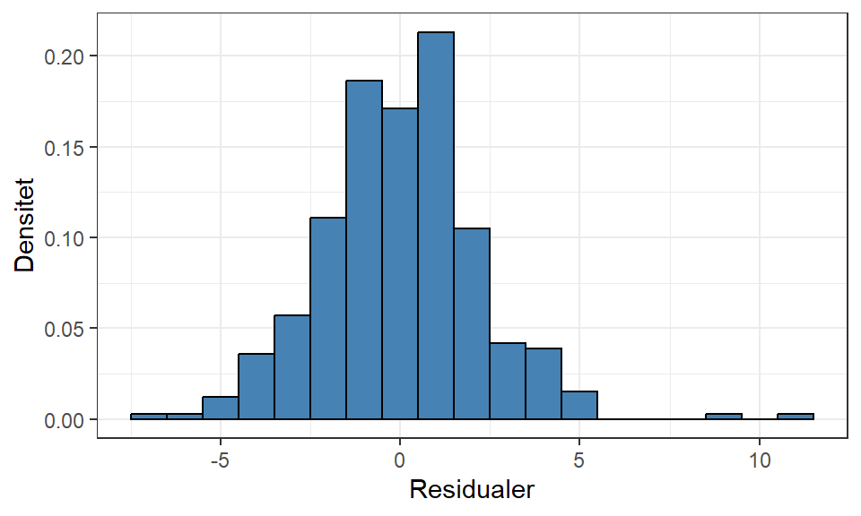
Visa kod
ggplot(residualData) +
# Använder standardiserade residualer
aes(sample = scale(residuals)) +
geom_qq_line() +
geom_qq(color = "steelblue") +
theme_bw() +
labs(x = "Teoretiska kvantiler", y = "Observerade kvantiler")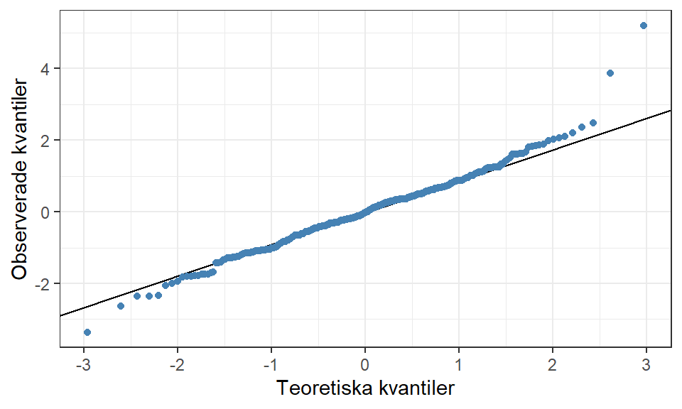
I histogrammet vill vi se normalfördelningens symmetriska och klockliknande form centrerad kring 0 vilket ibland kan vara svårt att utläsa speciellt om datamaterialet är litet. QQ-diagrammet visar de observerade och de teoretiska kvantilerna där vi vill att punkterna ska följa den inritade linjen för en “perfekt” normalfördelning.
För denna modell ser vi inga tydliga avvikelser från det mönster vi vill se, men vi kan utläsa ett fåtal avvikande observationer som skulle kunna betraktas som extremvärden. Två stora positiva residualer kan identifieras i diagrammen men det finns även enstaka negativa som ligger långt från de övriga.
Viktigt
Vi kan betrakta antagandet om normalfördelning som inte uppfyllt om dessa diagram visar på starka avvikelser från det vi vill se. Även när vi vet att ett urval är draget från en normalfördelning är det inte alltid som histogrammet visar den form som vi söker.
Visa kod
set.seed(1234)
tibble(
x = rnorm(30)
) %>%
ggplot() +
aes(x = x, y = after_stat(density)) +
geom_histogram(bins = 10, fill = "steelblue", color = "black") +
theme_bw() +
labs(x = "x", y = "Densitet")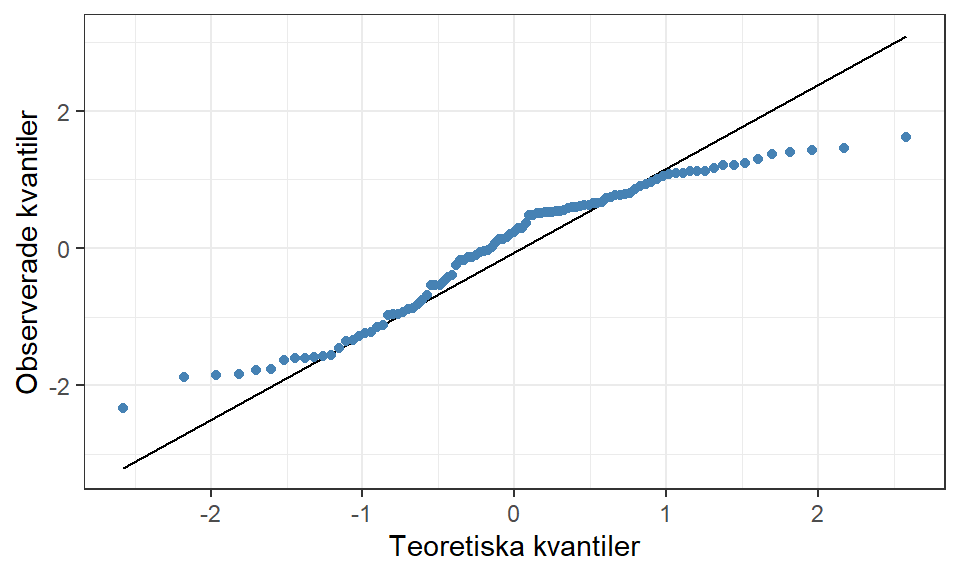
Starka avvikelser från normalfördelningen innebär exempelvis att vi ser flera områden med hög densitet:
Visa kod
set.seed(1234)
tibble(
x = runif(30)
) %>%
ggplot() +
aes(x = x, y = after_stat(density)) +
geom_histogram(bins = 10, fill = "steelblue", color = "black") +
theme_bw() +
labs(x = "x", y = "Densitet")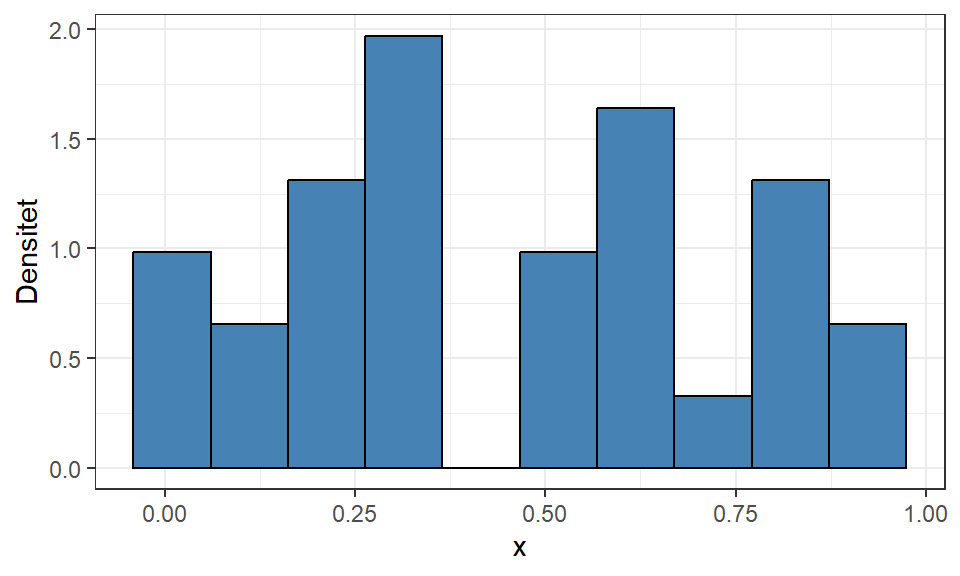
eller en väldigt skev fördelning:
Visa kod
set.seed(1234)
tibble(
x = rchisq(30, df = 2)
) %>%
ggplot() +
aes(x = x, y = after_stat(density)) +
geom_histogram(bins = 10, fill = "steelblue", color = "black") +
theme_bw() +
labs(x = "x", y = "Densitet")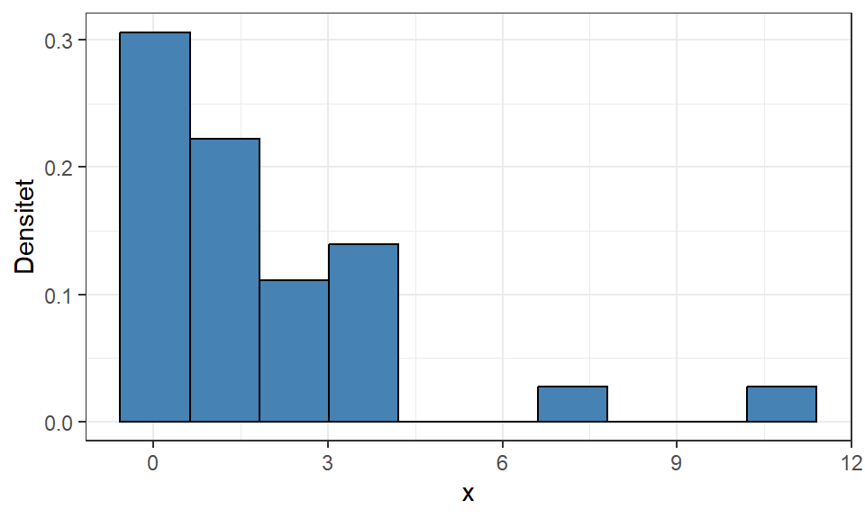
Dessa diagram indikerar att modellen saknar en förklarande variabel eller måste transformeras på något sätt för att uppfylla antagandet.
Om QQ-diagrammet uppvisar tydliga mönster, till exempel om punkterna är krökta runt linjen, betyder det att modellen inte uppfyller antagandet om linjärt samband.
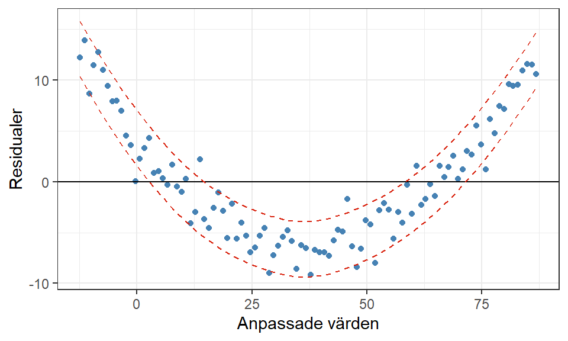
4.1.2 Lika varians
Vi kan kontrollera antagandet om residualernas lika varians genom ett spridningsdiagram med residualerna på y-axeln och någon av anpassade värden eller observerade värden på förklarande eller responsvariabeln. Vanligtvis används de anpassade värdena för att x-axeln ska beskriva hela modellen, men andra variabler kan vara användbara att visualisera för att identifiera potentiella orsaker till ett brustet antagande.
Visa kod
ggplot(residualData) +
aes(x = yHat, y = residuals) +
geom_point(color = "steelblue") +
theme_bw() +
labs(x = "Anpassade värden", y = "Residualer") +
geom_hline(
aes(yintercept = 0)
) +
# Imaginära gränser
geom_hline(
aes(yintercept = -5),
color = "#d9230f",
linetype = 2
) +
geom_hline(
aes(yintercept = 5),
color = "#d9230f",
linetype = 2
)
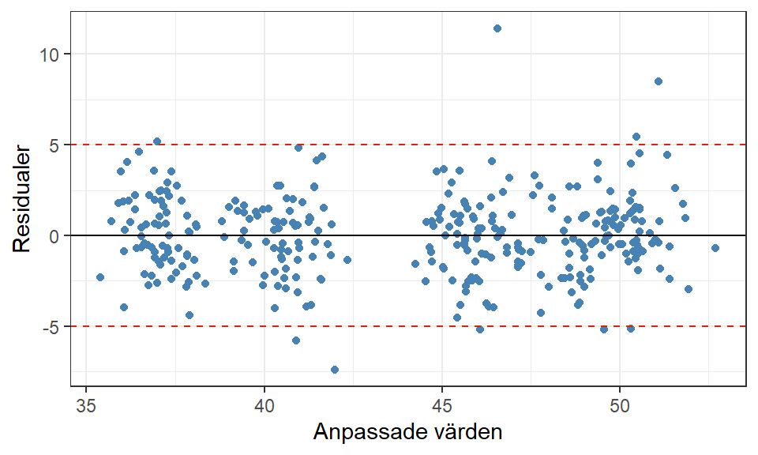
För att uppfylla antagandet om lika varians, ska punkterna i varje tvärsnitt av värden på x-axeln vara jämnt utspridda. Tänk som att vi vill placera två stycken parallella linjer längs med maximum och minimum-värden för residualerna (de två rödstreckade linjerna i Figur 4.1) och en stor majoritet av punkterna bör ligga utspridda emellan dessa. Vi ser i Figur 4.1 att några enstaka observationer faktiskt hamnar utanför och ökar variationen i vissa tvärsnitt, men då det inte är tydliga avvikelser kan vi anse att residualerna har uppfyllt antagandet om lika varians.
Viktigt
Om linjerna som täcker maximum och minimum-värden för residualerna inte är parallella uppfyller inte modellen kravet om lika varians.

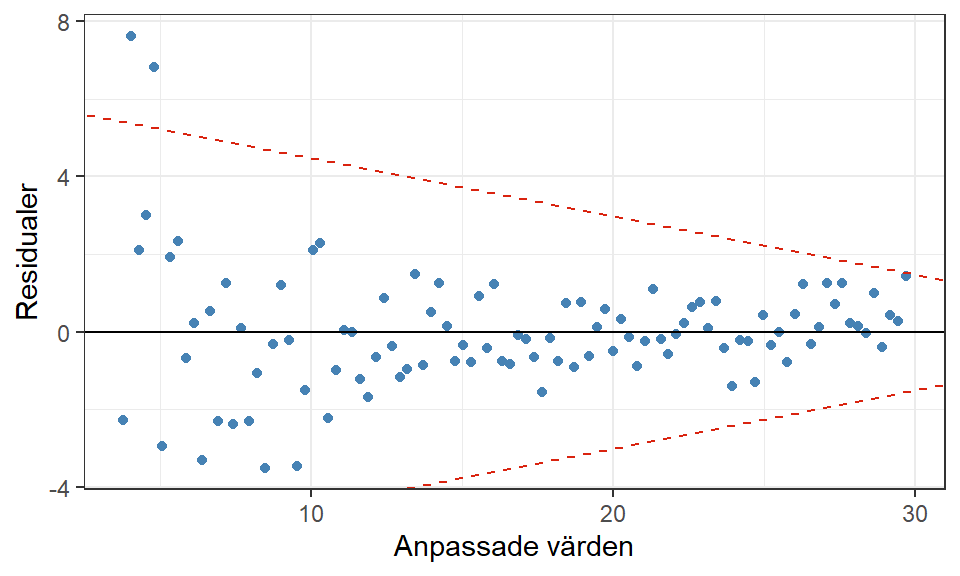
Dessa fenomen betyder oftast att hela eller delar av modellen behöver transformeras för att uppfylla antagandet om lika varians.
Vi kan också identifiera problem med linjäritet i detta spridningsdiagram. Figuren nedan uppvisar någorlunda konstant varians i avseende på variationen i varje tvärsnitt av x-axeln, men det finns ett tydligt mönster i residualerna. Detta betyder att modellen inte lyckats modellera sambandet på rätt sätt. I detta läge vore det lämpligt att visualisera residualerna mot respektive förklarande variabel för att identifiera vilken/vilka utav de som verkar bidra med det icke-linjära sambandet.
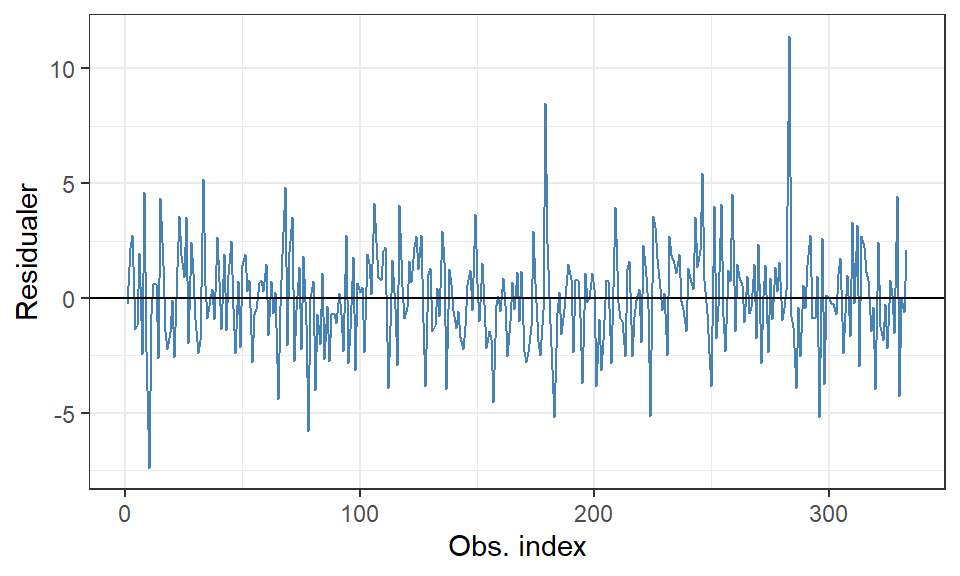
4.1.3 Oberoende
Ofta är det svårt eller omöjligt att undersöka om observationerna är oberoende med avseeende på alla ordningar som data kan samlas in på. Undantaget är ifall vi vet hur datainsamlingen har gått till och om det finns någon tydlig tidsaspekt, till exempel i tidsseriedata, eller att samma enhet har uppmätts flera gånger som gör att vi vet att observationerna blir beroende. Vi vill att den modell som anpassas tar hänsyn till det beroende som finns i data så att de efterföljande residualerna endast uppvisar oberoende.
Ett linjediagram över residualerna i observationsordning kan användas för att undersöka oberoende, men det är som sagt endast i specialfall som denna visualisering används. Linjediagrammet ska uppvisa “slump”, det vill säga inga tydliga mönster i residualerna.
Visa kod
ggplot(residualData) +
aes(x = 1:nrow(residualData), y = residuals) +
geom_line(color = "steelblue") +
theme_bw() +
labs(x = "Obs. index", y = "Residualer") +
geom_hline(
aes(yintercept = 0),
color = "black"
)Andra exempel på data som har ett beroende är:
- Vi samlar in data från personer, men vissa personer kommer ifrån samma famlij, detta kan göra att det finns ett beroende mellan dessa personer.
- Vi samlar in spatiala (rumsliga) data, till exempel temperatur eller regnmängd på olika platser i Östergötland. Då är det vanligt att det finns en positiv korrelation mellan geografiskt närliggande observationer.
4.1.4 Funktion med alla diagram
Dessa diagram kommer vara återkommande i regressionsmodellering så vi kan skapa en funktion för att automatiskt generera alla fyra diagram samtidigt. Vi får genom paketet cowplot tillgång till en funktion (plot_grid) som kan kombinera flera diagram till en och samma.
Visa kod
# Funktionen kräver två argument, modellen som anpassats och bredden på staplarna i histogrammet.
residualPlots <- function(model) {
residualData <-
data.frame(
residuals = residuals(model),
# Responsvariabeln finns som första kolumn i modellens model-objekt
y = model$model[,1],
yHat = fitted(model)
)
p1 <- ggplot(residualData) +
aes(x = residuals, y = after_stat(density)) +
geom_histogram(bins = 20, fill = "steelblue", color = "black") +
theme_bw() +
labs(x = "Residualer", y = "Densitet")
p2 <- ggplot(residualData) +
aes(x = yHat, y = residuals) +
geom_hline(aes(yintercept = 0)) +
geom_point(color = "steelblue") +
theme_bw() +
labs(x = "Anpassade värden", y = "Residualer")
p3 <- ggplot(residualData) +
# Använder standardiserade residualer
aes(sample = scale(residuals)) +
geom_qq_line() +
geom_qq(color = "steelblue") +
theme_bw() +
labs(x= "Teoretiska kvantiler", y = "Observerade kvantiler")
cowplot::plot_grid(p1, p2, p3, nrow = 2)
}
residualPlots(simpleModel)
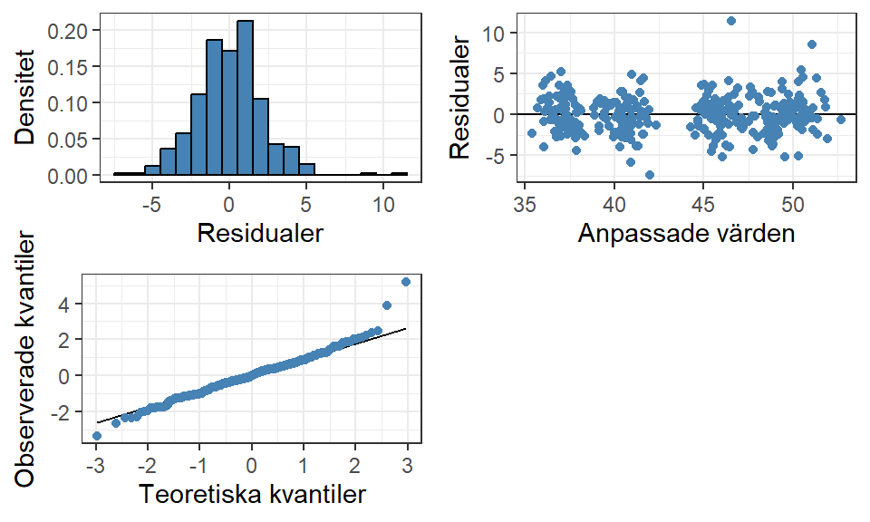
Sammanfattningsvis visar Figur 4.2 att residualerna uppfyller antagandet om normalfördelning med väntevärde 0 och lika varians. Det finns inga tydliga mönster i något diagram som indikerar på motsatsen eller att modellen missar att plocka upp något av sambandet. Några enstaka extremvärden har identifierats, specifikt två stycken stora positiva residualer som kommer undersökas mer i senare kapitel. Slutsatsen är att modellen är en lämplig förenkling av verkligheten.
4.2 Statistisk inferens
När vi anser oss ha hittat en lämplig modell kan vi fokusera på att tolka modellens resultat avseende populationen. Inom regressionsmodellering kan vi genomföra flera olika typer av statistisk inferens; på hela modellen, på grupper av parametrar, eller på enskilda parametrar.
Vi kan börja med ett F-test för hela modellen för att se ifall minst en parameter är signifikant, att modellen är värd att undersöka vidare, för att sedan genomföra enskilda t-test för respektive parameter och bedöma vilka förklarande variabler har en signifikant påverkan på responsvariabeln. Då kvalitativa variabler ofta består utav flera parametrar behöver dessa slås samman för att undersöka variabelns samband vilket vi kan göra med ett partiellt F-test.
Innan vi går in på de olika testerna behöver vi presentera ANOVA-tabellen som används för att dela upp responsvariabelns variation i modellens olika komponenter; modellens förklarande variabler och feltermen.
4.2.1 ANOVA
Analysis of Variance är en samling metoder som beräknar variationen av olika modellkomponenter. Målet med en modell är att förklara den totala variationen i responsvariabeln på bästa sätt. Allting som de förklarande variablerna hjälper till att beskriva kallas för den förklarade variationen och det som modellen inte lyckas förklara (felet) är den oförklarade variationen.
\[ \underbrace{\mathbf{Y}}_\text{total variation} = \underbrace{\mathbf{X} \boldsymbol{\beta}}_\text{förklarad variation} + \underbrace{\mathbf{E}}_\text{oförklarad variation} \tag{4.1}\]
Ekvation 4.1 visar att den totala variationen är en summa av den förklarade och oförklarade variationen vilket också ses i formlerna för dessa. Respektive komponent beräknas enligt:
\[ \text{total variation} = SST = \mathbf{Y}'\mathbf{Y} - \left(\frac{1}{n}\right)\mathbf{Y}'\mathbf{J}\mathbf{Y} \] där \(\mathbf{J}\) är enhetsmatrisen, en \(n \times n\) matris endast innehållande 1:or.
Det kanske inte är så lätt att se vad dessa matrisberäkningar faktiskt beskriver men beräkningen motsvarar \(\sum_{i=1}^n(Y_i - \bar{Y})^2\), alltså täljaren i en variansberäkning för \(Y\). Den vänstra termen (\(\mathbf{Y}'\mathbf{Y}\)) motsvarar \(Y_i\) och den högra termen (\(\left(\frac{1}{n}\right)\mathbf{Y}'\mathbf{J}\mathbf{Y}\)) motsvarar \(\bar{Y}\), responsvariabelns medelvärde. Den totala variationen beskriver hur mycket variation som uppkommer ifall vi skulle använda medelvärdet av \(Y\) som modell.
\[ \text{oförklarad variation} = SSE = \mathbf{Y}'\mathbf{Y} - \boldsymbol{\hat{\beta}}'\mathbf{X}'\mathbf{Y} \] SSE har vi tidigare använt som ett mått på felet i modellen, se Ekvation 3.4, vilket betyder att \(\boldsymbol{\hat{\beta}}'\mathbf{X}'\mathbf{Y}\) motsvarar \(\hat{Y}_i\).
\[ \text{förklarad variation} = SSR = \boldsymbol{\hat{\beta}}'\mathbf{X}'\mathbf{Y} - \left(\frac{1}{n}\right)\mathbf{Y}'\mathbf{J}\mathbf{Y} \]
SSR beskriver variationen mellan modellens anpassade värde och medelvärdet av \(Y\). Det kan i sin tur kan tolkas som hur mycket mer variation som modellen bidrar med jämfört med medelvärdet, eller kort sagt hur mycket bättre modellen är på att förklara variationen i \(Y\).
Vi har tidigare använt en annan matrisformel för SSE men med hjälp av omformuleringen kan vi tydligt se hur SST = SSR + SSE: \[ \mathbf{Y}'\mathbf{Y} - \left(\frac{1}{n}\right)\mathbf{Y}'\mathbf{J}\mathbf{Y} = \mathbf{Y}'\mathbf{Y} \underbrace{- \boldsymbol{\hat{\beta}}'\mathbf{X}'\mathbf{Y} + \boldsymbol{\hat{\beta}}'\mathbf{X}'\mathbf{Y}}_\text{summerar till 0} - \left(\frac{1}{n}\right)\mathbf{Y}'\mathbf{J}\mathbf{Y} \] Vi kan också visualisera denna relation i ett stackat stapeldiagram. Den totala höjden av stapeln är SST medan de olika delarna beskriver hur stor del av den totala variationen som är förklarad eller oförklarad i en viss modell.
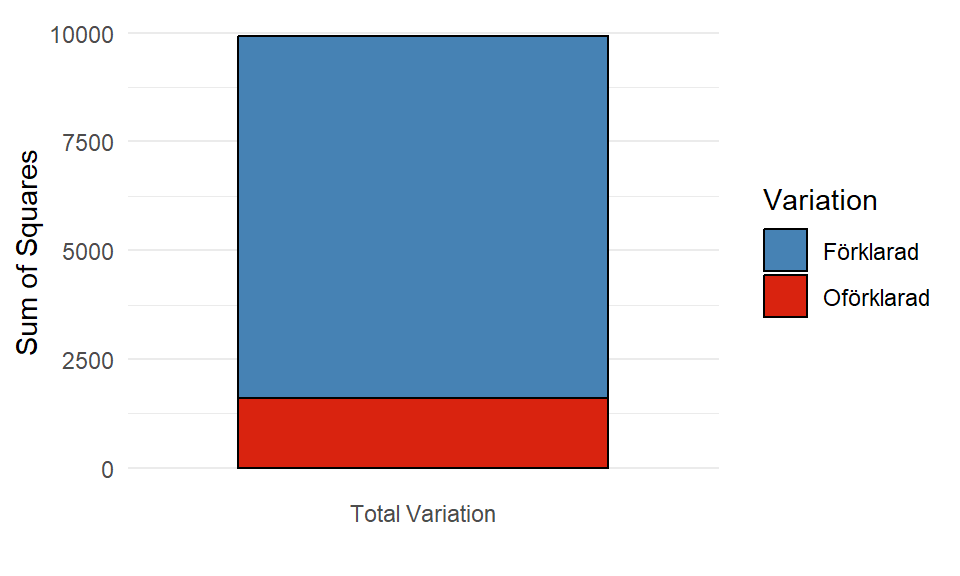
4.2.1.1 ANOVA-tabellen
En ANOVA-tabell är ett sätt att effektivt få en översikt av dessa olika komponenter samt visa ytterligare information, såsom frihetsgraderna (\(df\)) för respektive komponent och medelkvadratsummor.
Frihetsgrader beskriver hur många lutningsparametrar som skattas för respektive del1 och medelkvadratsummor visar den genomsnittliga variationen per frihetsgrad, \(\frac{SS}{df}\).
| Source | DF | Sum of Squares | Mean Square |
|---|---|---|---|
| Model (Regression) | \(df_R = k\) | \(SSR = \boldsymbol{\hat{\beta}}' \mathbf{X}' \mathbf{Y} - \frac{1}{n} \mathbf{Y}' \mathbf{J} \mathbf{Y}\) | \(MSR = \frac{SSR}{df_R}\) |
| Error | \(df_E = n - (k + 1)\) | \(SSE = \mathbf{Y}' \mathbf{Y} - \boldsymbol{\hat{\beta}}' \mathbf{X}' \mathbf{Y}\) | \(MSE = \frac{SSE}{df_E}\) |
| Total | \(df_T = n - 1\) | \(SSY = \mathbf{Y}' \mathbf{Y} - \frac{1}{n} \mathbf{Y}' \mathbf{J} \mathbf{Y}\) |
En enkel ANOVA-tabell som Tabell 4.1 visar endast de tre huvudsakliga komponenterna, men olika programvaror kan ibland visa andra uppdelningar som standard. I en multipel linjär regressionsmodell är det vanligt att dela upp den förklarade variationen ytterligare, exempelvis i sekventiella kvadratsummor.
4.2.1.2 Sekventiella kvadratsummor
Beräkningarna för en ANOVA-tabell sker automatiskt i R när vi använder lm() och vi kan plocka ut tabellen från modellobjektet med hjälp av anova(), (se Tip 3.1).
Visa kod
anova(simpleModel) %>%
round(4) %>%
kable() %>%
kable_styling("striped")| Df | Sum Sq | Mean Sq | F value | Pr(>F) | |
|---|---|---|---|---|---|
| species | 2 | 7015.3857 | 3507.6929 | 713.4929 | 0 |
| bill_depth_mm | 1 | 818.5050 | 818.5050 | 166.4905 | 0 |
| flipper_length_mm | 1 | 198.2269 | 198.2269 | 40.3210 | 0 |
| body_mass_g | 1 | 160.3760 | 160.3760 | 32.6218 | 0 |
| sex | 1 | 133.7191 | 133.7191 | 27.1995 | 0 |
| Residuals | 326 | 1602.6899 | 4.9162 |
Som standard, delar R upp modellens kvadratsumma (SSR) i de enskilda förklarande variablerna med hjälp av sekventiella (även kallad betingade) kvadratsummor. En sekventiell kvadratsumma beskriver hur mycket variation en förklarande variabel bidrar med givet att modellen redan innehåller andra förklarande variabler.
Ordningen som presenteras i Tabell 4.2 är ordningen som variablerna läggs till i modellen, till exempel visar andra raden \(SS(\text{bill\_depth\_mm} | \text{species})\), att näbbredden bidrar med 818.505 ytterligare unik förklarad variation av responsvariabeln som art inte redan har förklarat. Den tredje raden visar \(SS(\text{flipper\_length\_mm} | \text{species}, \text{bill\_depth\_mm})\), det vill säga hur mycket ytterligare unik variation som fenlängden förklarar i en modell som inkluderar näbbredd och art.
Rent matematiskt beräknas den sekventiella kvadratsumman som en summa av antingen SSE eller SSR mellan två olika modeller, en utan den tillagda variabeln och en med variabeln inkluderad. Anta att vi vill lägga till variabel \(X^*\) till en modell som har \(k\) andra variabler, då ser beräkningen ut som följer:
\[ \begin{aligned} SS(X^*|X_1, \ldots, X_k) &= SSE_{X_1, \ldots, X_k} - SSE_{X_1, \ldots, X_k, X^*} = \\ &= SSR_{X_1, \ldots, X_k, X^*} - SSR_{X_1, \ldots, X_k} \end{aligned} \tag{4.2}\]
Notera att SSR ökar för varje ytterligare variabel som läggs till i modellen, medan SSE alltid minskar. En variation måste alltid vara positiv, därav beräknas \(SSE_{reducerad} - SSE_{komplett}\) eller \(SSR_{komplett} - SSR_{reducerad}\).
Sekventiella kvadratsummor påverkas av ordningen variablerna läggs till i modellen. Låt oss byta ordning på de förklarande variablerna när vi anpassar modellen:
Visa kod
model <- lm(formula = bill_length_mm ~ sex + ., data = modelData)
anova(model) %>%
round(4) %>%
kable() %>%
kable_styling("striped")| Df | Sum Sq | Mean Sq | F value | Pr(>F) | |
|---|---|---|---|---|---|
| sex | 1 | 1175.4780 | 1175.4780 | 239.1017 | 0.0000 |
| species | 2 | 6975.5916 | 3487.7958 | 709.4457 | 0.0000 |
| bill_depth_mm | 1 | 64.4987 | 64.4987 | 13.1196 | 0.0003 |
| flipper_length_mm | 1 | 78.3815 | 78.3815 | 15.9434 | 0.0001 |
| body_mass_g | 1 | 32.2629 | 32.2629 | 6.5625 | 0.0109 |
| Residuals | 326 | 1602.6899 | 4.9162 |
I Tabell 4.3 ser vi att \(SS(\text{sex}) = 1175.478\) vilket är betydligt högre än \(SS(\text{sex}|\text{species}, \text{bill\_depth\_mm}, \text{flipper\_length\_mm}, \text{body\_mass\_g}) = 133.7191\) från Tabell 4.2. Variabeln kön bidrar med mycket variation när den är ensam i en modell, men när den läggs till i en modell som redan har andra variabler bidrar den inte med lika mycket unik information. Detta betyder att den förklarade variationen som variabeln bidrar med verkar finnas i övriga variabler också. Denna iakttagelse kommer vi komma tillbaka till i ett senare kapitel.
Någonting som är lika i de två tabellerna är SSE. Vi har i båda modellerna inkluderad samma variabler vilket innebör att SST, SSR, och SSE överlag är densamma. Summan av alla sekventiella kvadratsummor ska fortfarande bli SSR oavsett ordningen på variablerna och på grund av den additiva egenskapen hos variationen har SST och SSE inte heller förändrats.
4.2.2 F-test för modellen
I en multipel linjär regression är ett F-test för hela modellen bra att börja med för att se ifall minst en lutningsparameter är signifikant. Vi undersöker hypoteserna:
\[\begin{align*} H_0&: \beta_1 = \beta_2 = \beta_3 = \cdots = \beta_k = 0\\ H_a&: \text{Minst en av } \beta_j \text{ i } H_0 \text{ är skild från } 0 \end{align*}\]
Om minst en lutningsparameter är signifikant betyder det att det finns åtminstone en variabel som bidrar med förklarad variation, att modellen är bättre än att använda enbart \(\bar{Y}\). Testvariabeln undersöker relationen mellan den förklarande och oförklarande variationen genom dess medelkvadratsummor.
\[ F_{test} = \frac{SSR / k}{SSE / (n - (k+1))} = \frac{MSR}{MSE} \]
Testvariabeln följer en F-fördelning som styrs av två frihetsgrader; \(df1\) från täljaren och \(df2\) från nämnaren i beräkningen, det vill säga modellens och felets frihetsgrader. Om \(H_0\) är sann kommer testvariabeln bli 0, medan om \(H_a\) är sann kommer testvariabeln bli ett stort positivt tal. Eftersom båda medelkvadratsummorna är positiva tal innebär det att kvoten alltid kommer vara positiv och vi kan förkasta \(H_0\) om testvariabeln befinner sig nog långt från 0.
Visa kod
# Skapar en funktion för att generera olika F-fördelningar
generateFdistribution <- function(df1, df2, n = 1000) {
x <- seq(0, 5, length.out = n)
y <- df(x, df1, df2)
tibble(x = x, y = y, df1 = df1, df2 = df2)
}
# Skapar en lista med olika frihetsgrader
dfs <- list(c(5, 30), c(10, 100), c(20, 50), c(30, 300))
# Genererar data
Fdistributions <- dfs %>%
purrr::map_df(~generateFdistribution(.x[1], .x[2]), .id = "Distribution") %>%
mutate(Distribution = paste0("df1 = ", df1, ", df2 = ", df2))
# Plot the F-distributions using ggplot2
ggplot(Fdistributions) +
aes(x = x, y = y, color = Distribution) +
geom_line(linewidth = 1) +
labs(
x = "F-värde",
y = "Densitet",
color = "Frihetsgrader"
) +
theme_minimal() +
theme(
plot.title = element_text(hjust = 0.5, size = 14, face = "bold"),
legend.position = "right",
legend.title = element_text(face = "bold")
) +
scale_color_manual(values = c("steelblue", "#d9230f", "black", "grey50"))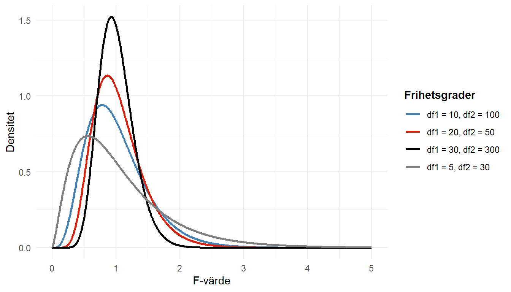
För att få fram SSR från en ANOVA-tabell i R behöver vi summera de sekventiella kvadratsummorna. Vi kan sedan bearbeta tabellen för att få fram testvariabeln och använda frihetsgraderna för respektive källa i pf(lower.tail = FALSE) för att få fram p-värdet för testet.
Visa kod
anovaTable <- anova(simpleModel)
# Beräknar raden för SSR utifrån alla rader förutom SSE
SSR <- anovaTable[-nrow(anovaTable),] %>%
summarize(across(Df:`Sum Sq`, ~sum(.x))) %>%
mutate(`Mean Sq` = `Sum Sq` / Df,
`F value` = NA,
`Pr(>F)` = NA)
# Kombinerar SSR med SSE från ursprungliga tabellen
simpleAnova <- SSR %>%
add_row(anovaTable[nrow(anovaTable),]) %>%
mutate(
`F value` =
ifelse(row_number() == 1,
`Mean Sq`[1] / `Mean Sq`[2],
NA),
`Pr(>F)` =
ifelse(row_number() == 1,
pf(q = `F value`[1], df1 = Df[1], df2 = Df[2], lower.tail = FALSE),
NA)
)
rownames(simpleAnova) <- c("Model", "Residuals")
kable(simpleAnova, digits = 4) %>%
kable_styling("striped")| Df | Sum Sq | Mean Sq | F value | Pr(>F) | |
|---|---|---|---|---|---|
| Model | 6 | 8326.213 | 1387.7021 | 282.2698 | 0 |
| Residuals | 326 | 1602.690 | 4.9162 |
Eftersom p-värdet är mindre än 5 procent, kan \(H_0\) förkastas och minst en av variablerna har ett samband med responsvariabeln.2
4.2.3 Partiella F-test för grupper av parametrar
Ibland är vi intresserade att undersöka delar av modellen, en grupp med lutningsparametrar. Ett sådant fall är om vi vill undersöka en kvalitativ variabels påverkan eftersom den kan ha transformerats till flera indikatorvariabler alla med en tillhörande lutningsparameter. Ett annat tillfälle är om vi vill undersöka om flera variabler tillsammans bidrar med förklarad variation till modellen.
Istället för att undersöka alla lutningsparametrar undersöks nu ett urval: \[\begin{align*} H_0&: \beta_1 = \beta_2 = \beta_3 = \cdots = \beta_s = 0\\ H_a&: \text{Minst en av } \beta_j \text{ i } H_0 \text{ är skild från } 0 \end{align*}\] där \(s\) är antalet parametrar som undersöks.
Testvariabeln för ett partiellt F-test kräver en komplett (betecknad \(_F\)) och en reducerad modell (betecknad \(_R\)). Den kompletta modellen består av alla variabler medan den reducerade modellen utgår från att \(H_0\) är sann och variablerna som undersöks har plockats bort från anpassningen. Vi kan välja att antingen använda SSR eller SSE för att beräkna hur mycket förklarad variation som försvinner mellan de två modellerna enligt samma princip som Ekvation 4.2.
\[ F_{test} = \frac{(SSR_F - SSR_R) / s}{SSE_F / (n - (k+1))} = \frac{(SSE_R - SSE_F) / s}{SSE_F / (n - (k+1))} \tag{4.3}\]
Testvariabeln är fortfarande F-fördelat med \(s\) respektive \(n - (k+1)\) frihetsgrader.
4.2.3.1 Räkneknep för partiella F-test
Med hjälp av Ekvation 4.2 kan Ekvation 4.3 formuleras på ett tredje sätt som underlättar vår analysprocess. Vi kan skriva om skillnaden i förklarad variation mellan den kompletta och reducerade modellen som en sekventiell kvadratsumma. Exempelvis kan vi vilja undersöka om variabeln art har ett samband med responsvariabeln. Eftersom den variabeln transformeras till två indikatorvariabler omfattar hypoteserna två lutningsparametrar.
\[\begin{align*} H_0&: \beta_{Chinstrap} = \beta_{Gentoo} = 0\\ H_a&: \text{Minst en av } \beta_j \text{ i } H_0 \text{ är skild från } 0 \end{align*}\]
Den reducerade modellen skapas utifrån att \(H_0\) är sann, det vill säga \(\beta_{Chinstrap} = \beta_{Gentoo} = 0\) och de två modellernas förklarade variation skulle betecknas som: \[ \begin{aligned} SSR_{R} &= SSR_{bill\_depth\_mm, flipper\_length\_mm, body\_mass\_g, sex} \\ SSR_{F} &= SSR_{bill\_depth\_mm, flipper\_length\_mm, body\_mass\_g, sex, species} \end{aligned} \]
Vi kan omformulera täljaren i Ekvation 4.3 till: \[ SS(species|bill\_depth\_mm, flipper\_length\_mm, body\_mass\_g, sex) \] I de ANOVA-tabeller som presenterats tidigare kan vi få fram denna kvadratsumma direkt om art läggs till som den sista variabeln i modellen.
Visa kod
model <- lm(bill_length_mm ~ bill_depth_mm + flipper_length_mm + body_mass_g + sex + species, data = modelData)
anova(model) %>%
round(4) %>%
kable() %>%
kable_styling("striped")| Df | Sum Sq | Mean Sq | F value | Pr(>F) | |
|---|---|---|---|---|---|
| bill_depth_mm | 1 | 518.9806 | 518.9806 | 105.5648 | 0.0000 |
| flipper_length_mm | 1 | 4045.7248 | 4045.7248 | 822.9329 | 0.0000 |
| body_mass_g | 1 | 6.1329 | 6.1329 | 1.2475 | 0.2649 |
| sex | 1 | 68.4245 | 68.4245 | 13.9181 | 0.0002 |
| species | 2 | 3686.9500 | 1843.4750 | 374.9776 | 0.0000 |
| Residuals | 326 | 1602.6899 | 4.9162 |
En ANOVA-tabell med sekventiella kvadratsummor beräknar ett partiellt F-test för respektive variabel (och dess parameter/parametrar) som undersöker huruvida variabeln bidrar med en signifikant ökning av den förklarade variationen till en modell som redan inkluderar variablerna ovanför. Tabell 4.5 beräknar nu det partiella F-test för art (\(F_{test} = 374.9776\)) som vi var intresserade av och vi kan direkt tolka p-värdet för testet (\(p-värde < 0.001\)) som att minst en av lutningsparametrarna är signifikant skild från 0.
Om vi genomför ett partiellt F-test för flera variabler kan vi inte använda p-värden som anges i tabellen då hypoteserna omfattar fler lutningsparametrar/variabler än vad de sekventiella kvadratsummorna visar. Anta att vi vill undersöka om art och kön tillsammans bidrar något till modellen. Hypotesprövningen skulle då omfatta:
\[ \begin{aligned} H_0&: \beta_{sexMale} = \beta_{Chinstrap} = \beta_{Gentoo} = 0\\ H_a&: \text{Minst en av } \beta_j \text{ i } H_0 \text{ är skild från } 0 \end{aligned} \]
Den sekventiella kvadratsumman som vi vill använda anges som \(SS(species, sex|bill\_depth\_mm, flipper\_length\_mm, body\_mass\_g)\) och vi kan beräkna fram detta värde genom att summera de två variablernas SS från Tabell 4.5.
\[ \begin{aligned} SS(species, sex|bill\_depth\_mm, flipper\_length\_mm, body\_mass\_g) = \\ SS(species|bill\_depth\_mm, flipper\_length\_mm, body\_mass\_g, sex) + \\ SS(sex|bill\_depth\_mm, flipper\_length\_mm, body\_mass\_g) \end{aligned} \] Alternativet är att anpassa två modeller i R, den kompletta och reducerade och läsa av SSE eller summera SSR från respektive ANOVA-tabell.
4.2.3.2 Partiellt F-test för specifika värden
Vi kan ställa upp en generell modell som: \[\begin{align*} Y = \beta_0 + \beta_1 \cdot X_1 + \beta_2 \cdot X_2 + \beta_3 \cdot X_3 +\beta_4 \cdot X_4 +\beta_5 \cdot X_5+ E \end{align*}\]
Om vi ska undersöka specifika parametrars värden (som inte är 0) kan vi genomföra följande härledning. Anta \(H_0:\) \(\beta_2=4\) och \(\beta_5 = -2\) som ska undersökas med ett test.
\[\begin{align*} Y &= \beta_0 + \beta_1 \cdot X_1 + 4 \cdot X_2 + \beta_3 \cdot X_3 +\beta_4 \cdot X_4 - 2 \cdot X_5+ E\\ Y - 4 \cdot X_2 + 2 \cdot X_5 &= \beta_0 + \beta_1 \cdot X_1 + \beta_3 \cdot X_3 +\beta_4 \cdot X_4 + E \\ Y^* &= \beta_0 + \beta_1 \cdot X_1 + \beta_3 \cdot X_3 +\beta_4 \cdot X_4 + E \end{align*}\]
\(Y^*\) kan anses vara en reducerad modell för ett F-test. I R kan detta inte lösas genom anova() utan måste beräknas ‘’för hand’’ genom att anpassa två modeller, den kompletta och den reducerade.
4.2.4 t-test för enskilda parametrar
Att använda ANOVA-tabellen för att undersöka enskilda parametrar är inte lämpligt då det kräver att variabeln anges sist i modelleringen för att det partiella F-testet undersöker just den enskilda variabeln i relation till övriga modellen. Istället bör vi använda t-test för respektive parameter.
Formellt undersöks hypoteserna: \[ \begin{aligned} H_0&: \beta_j = 0\\ H_a&: \beta_j \ne 0 \end{aligned} \] där \(j\) är någon av lutningsparametrarna i en anpassad modell.
Testvariabeln beräknas utifrån den skattade lutningsparametern och dess medelfel: \[ \begin{aligned} t_{test} = \frac{b_j - 0}{s_{b_j}} \end{aligned} \]
Testvariabeln är t-fördelad givet \(H_0\) med \(n-(k+1)\) frihetsgrader.
I R används t-test i koefficienttabellen som vi kan plocka ut ur summary()-objektet genom coef().
Visa kod
summary(simpleModel) %>%
coef() %>%
round(4) %>%
kable(format = "markdown",
col.names = c("Parameter", "Estimate", "Std. Error", "t value", "Pr(>t)"),
parse = TRUE) %>%
kable_styling("striped")| Parameter | Estimate | Std. Error | t value | Pr(>t) |
|---|---|---|---|---|
| (Intercept) | 15.0166 | 4.3742 | 3.4330 | 0.0007 |
| speciesChinstrap | 9.5655 | 0.3497 | 27.3508 | 0.0000 |
| speciesGentoo | 6.4044 | 1.0304 | 6.2154 | 0.0000 |
| bill_depth_mm | 0.3130 | 0.1541 | 2.0316 | 0.0430 |
| flipper_length_mm | 0.0686 | 0.0232 | 2.9608 | 0.0033 |
| body_mass_g | 0.0011 | 0.0004 | 2.5617 | 0.0109 |
| sexmale | 2.0297 | 0.3892 | 5.2153 | 0.0000 |
I Tabell 4.6 ser vi att p-värdet för alla t-testen är väldigt låga (nära 0). För varje enskilda hypotesprövning kan vi på fem procents signifikans förkasta \(H_0\) vilket betyder att variabeln har en signifikant påverkan på responsvariabeln.
Viktigt
Om en parameter inte anses signifikant är det en motivering till att variabeln kan plockas bort, vi anpassar en reducerad modell och en ny analys påbörjas. Om en variabel plockas bort kommer de övriga parameterskattningarna förändras och tolkningar samt inferens behöver uppdateras.
4.2.5 Konfidensintervall för \(\beta\)
Slutsatsen vi kan dra från dessa hypotesprövningar är att modellen innehåller variabler som alla har ett signifikant samband med responsvariabeln. Om vi vill tolka magnituden av effekten gentemot populationen, inte bara om sambandet är signifikant, behöver vi beräkna intervallskattningar.
\[ \begin{aligned} b_j \pm t_{n - (k+1); 1- \alpha/2} \cdot s_{b_j} \end{aligned} \]
4.3 Enkla utvärderingsmått
Bara för att en modell är lämplig, uppfyller modellantaganden och innehåller signifikanta parametrar, betyder det inte att modellen är den bästa som kan skapas eller överhuvudtaget bra. Med hjälp av olika utvärderingsmått kan vi få en överblick på hur bra modellen är.
Förklaringsgraden (\(R^2\)) beskriver hur stor andel av den totala variationen som förklaras av modellens förklarande variabler. Med denna beskrivning kan vi beräkna \(R^2\) som: \[ \begin{aligned} R^2 = \frac{SSR}{SST} = 1 - \frac{SSE}{SST} \end{aligned} \] På grund av att SSR alltid blir större ju fler variabler som en modell innehåller, behöver vi justera måttet för att kunna jämföra modeller av olika storlekar. Istället bör vi titta på den justerade förklaringsgraden (\(R^2_{a}\)) för att se vilken modell som är bäst. En förbättrad \(R^2_{a}\) betyder att modellen har tagit bort onödig komplexitet.
\[ \begin{aligned} R^2_a = 1 - \frac{SSE / (n - (k+1))}{SST / (n - 1)} \end{aligned} \]
4.4 Övningsuppgifter
Använd återigen marketing från Avsnitt 2.4.
Genomför en enkel residualanalys med hjälp av de residualdiagrammen. Kontrollera respektive antagande och bedöm ifall modellen uppfyller modellantaganden.
Genomför enskilda t-test för respektive variabel för att bedöma om var och en har en signifikant samband med responsvariabeln.
Frihetsgrader beskriver egentligen hur många bitar oberoende information som finns för en beräkning. Tänk tillbaka på beräkningen av en stickprovsstandardavvikelse vars frihetsgrader är \(n - 1\), antalet observationer - 1, för att vi skattar medelvärdet när vi beräknar standardavvikelsen.↩︎
Om vi hade tagit ett annat beslut (att inte förkasta nollhypotesen) hade det inte varit relevant att fortsätta med analysen, eller åtminstone att fokusera resterande analys på att undersöka varför en multipel linjär regressionsmodell som vi förväntar har ett samband utifrån parvisa spridningsdiagram inte visar på det tillsammans.↩︎